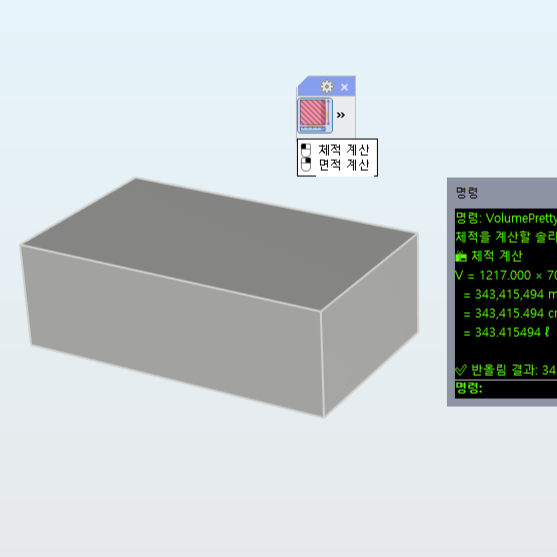
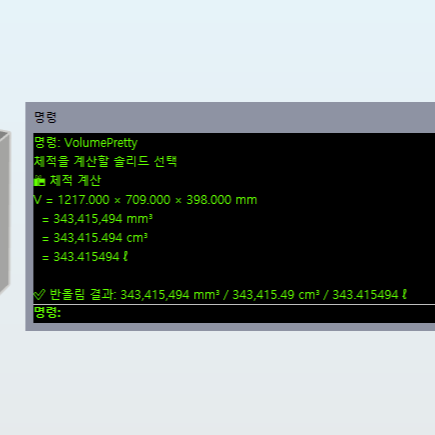
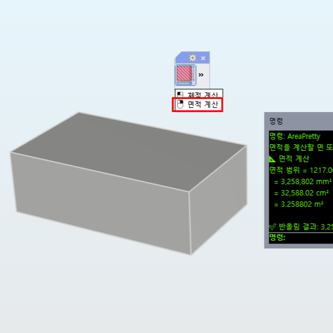
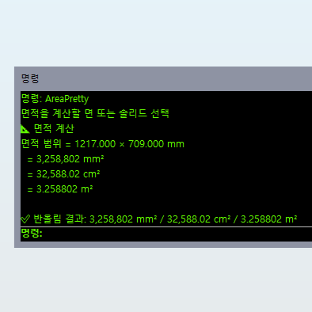

VolumePretty
VolumePretty :
체적 계산 결과를 식과 단위별로 정밀하게 표시합니다.
AreaPretty :
면적 계산 결과를 식과 단위별로 정밀하게 표시합니다.
Steps (VolumePretty)
VolumePretty 명령 실행
솔리드 객체 선택
단위별 체적과 반올림 결과 확인
 
Steps (AreaPretty)
AreaPretty 명령 실행
면 또는 솔리드 객체 선택
단위별 면적과 반올림 결과 확인
 
Note
곡면이나 불완전한 형상의 경우 계산 값이 정확하지 않을 수 있습니다.
면적 계산은 열린 곡선이 아닌 폐곡면 또는 솔리드 객체를 기준으로 수행됩니다.